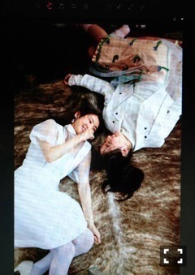
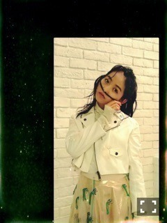
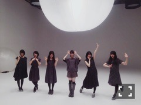
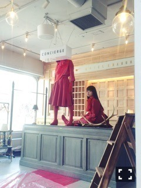

| 2015/12 19 Sat | 人型星座。684回目 |

アンダーライブat武道館
千秋楽のアンコールに
出演しました！
初日、観に行きました。
どんどん大きくなっていく
みんなを見てきたけど、
この武道館で見せつけられました。
あの場に立つことを受け入れてくれた
メンバー、会場の皆さんに感謝。
いつしかアンダーライブが
乃木坂のひとつの魅力として
紹介されるようになり、
たくさんのメディアに
取り上げられるようになったこと。
当時、考えもしなかったことが
今当たり前のように動いています。
信じられないくらいに
大きくなりすぎていて、
あの頃よりもっと大きな重圧を
抱えている中、武道館を
達成させたことを考えると、
単純に、すごいな。と
あの頃と言っても1年前の話ですが。
ここにたどり着くまでに
自分も力になれていたのだとしたら、
強気でよかったかもしれません。
この武道館までの道のりが
一部始終と考えるとしたら
何があっても受け止めていけるし、
もっと前に進めると思います。
そして、卒業発表したらりん。
メンバーを引っ張ってきて
アンダーライブだけじゃなく、
全体のライブの流れも
変えたのはらりんです。
支え合った仲間として、
私は背中を押します。
アンコールでチューされた〜
ハンターみたいな目だったよ笑
ライブでは相変わらず、
笑顔が素敵だ！！
本当にお疲れ様でした。
明日から2日間クリスマスショー！
楽しもう＼(^o^)／
......

乃木坂46物語、
PF vol.2発売中です。
リニューアルして更に可愛くなったPF
またまた表紙、嬉しいです。
メイクも衣装も大好きな雰囲気。
さゆとふたりで
舞台を終えての話をしています。
好きなものも語っています！
明日のらじらー、わくわく！

表紙はTHEATRE PRODUCTS
中はMIKIOSAKABE
12月20日 melantrick photo book 【mirror】
12月23日 MUSIC VIDEO集「ALL MV COLLECTION〜あの時の彼女たち〜」
12月25日 FLASHスペシャル
12月29日 BUBKA
あらかじめ語られるロマンス
short ver.公開されました。

お気に入り！！
赤人間、いい味出してます。
同じパートを歌っている未央奈と
一緒の撮影ができずでしたが、
つい最近一緒にお仕事したよ〜
また撮影は別々だったけども。
完成が楽しみ。

CONCIERGE
まりか
コメント(429)
2015/12/19 18:00